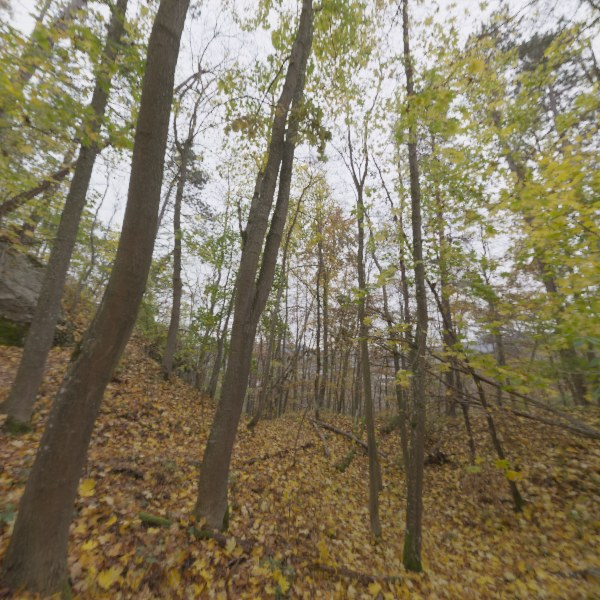
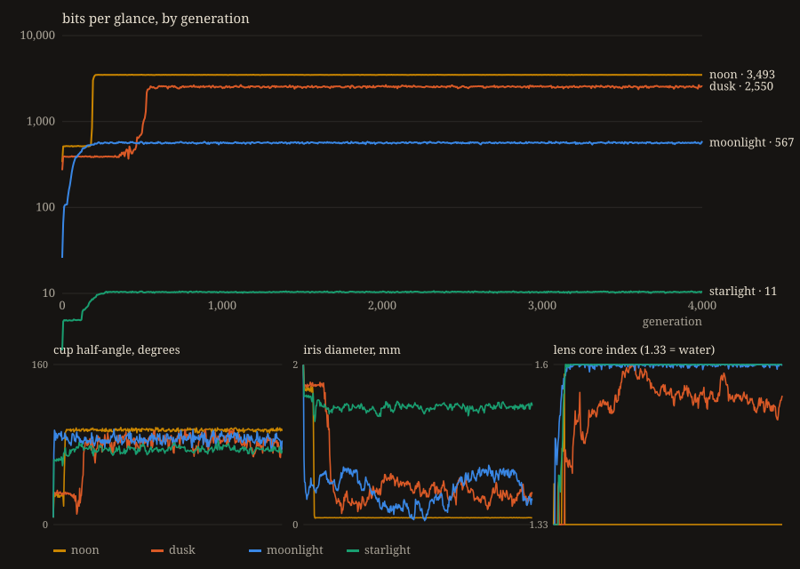

BITS PER GLANCE

Above: on the left, a cross-section of the eye, with rays traced back from three of its cells (yellow from the centre of the patch, green from halfway out, red from the edge). On the right, what the eye sees: the same forest (the picture at right, a 100° field of an autumn wood) as it lands on the eye's 1,024 cells, with the photon noise of that world's light, re-rolled at every glance. Pick a light, drag the generation slider, press play. Tap the mosaic for a new glance.
The eye starts as a flat disc of light-sensitive cells one millimetre across. Seven numbers describe it: how far the disc curls into a cup, how wide the hole at the rim is, whether there is a lens, how big it is and where it sits, and the refractive index of the lens's outer, middle and core layers (a lens starts as water and only counts when it is denser). Nothing else. Each generation, ten mutants are made, every one is scored, and the best replaces the parent if it is not worse.
The score is one number: how many bits of information about the world the eye's cells deliver per glance, in the presence of the noise that light itself brings. Few photons, much noise. A cell that receives a million photons can report its brightness to about six bits (I give every cell 2% gain noise: a photoreceptor is not a photometer); a cell that receives one photon can barely say whether it is dark. An eye is 1,024 such channels, and the bits they carry together depend on how different their views are, which is what optics is for. The same forest at noon, at dusk, by moonlight and by starlight is a different problem, and the four eyes that come out are not the same eye.
WHAT HAPPENED
Four thousand generations in each light, from the same flat patch. Noon sat in a shallow dish for 180 generations, then in one event about twenty generations long curled to a 94° cup and shut its rim to a 0.09 mm pinhole: 3,493 bits per glance, and it never grew a lens; there is light to spare, so the sharpest hole wins. Moonlight made the cup in thirteen generations, and the blob of water at the rim densified over the next hundred into a lens with a core index of 1.60 (glass is 1.5): 567 bits. Dusk is the odd one: it hesitated in a shallow dish for five hundred generations while a small lens densified, then deepened the cup and closed the iris together, and ends with the second-best eye, 2,550 bits, a lens of radius 0.29 mm behind a 0.39 mm pupil. Starlight, one photon per cell per glance, made the cup in four generations and then grew a lens the size of the whole eye and never closed the iris at all: 10.5 bits, a bucket for light that can tell the ground from the sky and little else. The re-scored eyes with real rays instead of the fitness's Gaussian approximation come out higher (4,037 / 3,565 / 756 / 11), same order.

THE FILM
HOW IT IS COMPUTED
The eye is a body of revolution: a spherical cap of fixed area for the retina (area held
constant, so curling the patch is free), an iris at the rim, a ball lens of three concentric
shells. Rays are traced backwards from each cell, through the shells by Snell's law,
past the cup wall and the iris, out to a real HDR photograph of a forest (Poly Haven's
autumn_forest_01, CC0). Because the eye is symmetric, one point-spread function
per ring of cells suffices: its mean direction, its angular spread, and how much of the
open hemisphere's light still gets through. Cell size (0.03 mm) and diffraction at the iris
both blur. The information is the Gaussian mutual information between the world, sampled as
2,048 random rotations of the photograph, and the cells' photon counts with Poisson noise,
a dark floor of four photons and the 2% gain noise, computed as half the log-determinant of
the whitened covariance. Evolution is a (1+10) strategy with 1% steps for most mutants and
3% and 10% steps for a few, because the landscape has shallow valleys that 1% steps cannot
cross. Everything runs on the GPU in about 20 ms per eye.
The mosaic above is not that approximation: it is 4,096 rays per cell traced through the actual eye into the photograph, and then the photon dice are rolled in your browser for every glance.
HONESTY
- One kind of cell, so the eye is colour-blind; the world is shown in colour only for you.
- The lens is a homogeneous-shell ball lens, not a true graded index; the retina is a perfect sphere; there is no cornea because the eye lives in water.
- The fitness uses a Gaussian point-spread approximation and a Gaussian channel model; the mosaic uses the real rays. Where they disagree, the mosaic is right.
- Time is measured in generations of a hill-climber, not years or individuals. It is not the Nilsson–Pelger estimate and does not try to be.
- The retina's cell count is fixed at 1,024 and its area at 3.1 mm²; real eyes can also grow, and growth changes the answer.
- Selection accepted ties on a noisy score, so each trajectory ends a few percent below its own best generation (noon 3,493 vs 3,508 at generation 354; dusk 2,550 vs 2,670 at 758; moonlight 567 vs 594 at 448). The numbers shown are the final generation's.
- The dish that noon and dusk sat in for hundreds of generations is a real local optimum of this score, about 2.5% deep; 1% mutations could not cross it, and the run was restarted with occasional 3% and 10% mutations. Whether biology has the same valley I do not know.